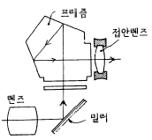
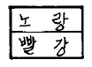
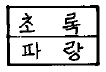
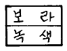
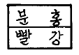
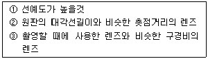

사진기능사 (2001-10-14 기출문제)
1과목: 사진일반
1. 강한 빛이 렌즈에 닿으면 여러 렌즈에서 서로 반사하여 필름에 점 또는 조리개 무늬를 만들기도 하여 화상을 이 중으로 해친다. 이를 무엇이라 하는가?(문제 오류로 정답이 정확하지 않습니다. 정답지를 찾지못하여 임의 정답 1번으로 설정하였습니다. 정답을 아시는 분께서는 오류 신고를 통하여 정답 입력 부탁 드립니다.)
- 포그(fog)
- 할레이션(halation)
- 플레어(flare)
- 선예도
(정답률: 알수없음)

2. 다음 중 필름 감광도 표시기호가 아닌 것은?(문제 오류로 정답이 정확하지 않습니다. 정답지를 찾지못하여 임의 정답 1번으로 설정하였습니다. 정답을 아시는 분께서는 오류 신고를 통하여 정답 입력 부탁 드립니다.)
- DIN
- ISO
- ASA
- USA
(정답률: 알수없음)
3. 데이라이트 타입(daylight type)으로 필터를 사용하지 않고 촬영하고자 할 때에 사용하여도 좋은 조명기구는?
- 사진용 백색전구
- 할로겐램프
- 촛불
- 스트로보
(정답률: 알수없음)
4. 35mm 필름용 일안 반사식(Single lens reflex) 카메라와 거리계 연동식(Range finder)카메라를 설명한 것이다. 이 중 틀린 것은?(문제 오류로 정답이 정확하지 않습니다. 정답지를 찾지못하여 임의 정답 1번으로 설정하였습니다. 정답을 아시는 분께서는 오류 신고를 통하여 정답 입력 부탁 드립니다.)
- 거리계 연동식 카메라는 시차(Parallax)가 있다.
- 거리계 연동식 카메라는 렌즈 교환이 자유롭다.
- 일안 반사식 카메라는 반사경이 있다.
- 일안 반사식 카메라는 대부분 포컬플레인셔터이다.
(정답률: 알수없음)
5. 컬러사진에서 색을 재현해 주는 물감은?(문제 오류로 정답이 정확하지 않습니다. 정답지를 찾지못하여 임의 정답 1번으로 설정하였습니다. 정답을 아시는 분께서는 오류 신고를 통하여 정답 입력 부탁 드립니다.)
- 커플러(Coupler)
- 할로겐화은(AgX)
- 젤라틴(Gelatine)
- 필름베이스(Film base)
(정답률: 알수없음)
6. 적외선 촬영시에 사용하면 효과가 좋은 filter는?(문제 오류로 정답이 정확하지 않습니다. 정답지를 찾지못하여 임의 정답 1번으로 설정하였습니다. 정답을 아시는 분께서는 오류 신고를 통하여 정답 입력 부탁 드립니다.)
- 보라색
- 파랑색
- 적색
- 초록색
(정답률: 알수없음)
7. 작은 부분 또는 반사되는 빛이나 모델의 얼굴 혹은 몸의 특정 부분을 측정하려면 어떤 노출계로 측정하는 것이 가장 좋은가?
- 플래시 노출계
- 입사식 노출계
- 반사식 노출계
- 스포트 노출계
(정답률: 알수없음)
8. 스트로보(Electronic flash) 촬영시 가이드 넘버가 40인 스트로보로 조명거리 5m에서 촬영 한다면 적정 노출을 위한 조리개 수치는?
- f/4
- f/5.6
- f/8
- f/11
(정답률: 알수없음)
9. 셔터(Shutter)의 기능은?(문제 오류로 정답이 정확하지 않습니다. 정답지를 찾지못하여 임의 정답 1번으로 설정하였습니다. 정답을 아시는 분께서는 오류 신고를 통하여 정답 입력 부탁 드립니다.)
- 피사체에서 반사되는 광선을 모아 초점면에 영상을 만듬
- 광선을 받아들이는 시간을 조절하는 일
- 촬영 범위를 알 수 있는 것
- 사각밖에서 렌즈로 들어오는 유해광선 차단
(정답률: 알수없음)
10. 메톨(metol)의 작용과 관계가 없는 것은?
- 급성현상 주약이다.
- 무색침상의 결정체이다.
- 암부묘사가 뛰어나다.
- 경조화상을 만든다.
(정답률: 알수없음)
11. 일반적으로 가장 많이 사용되는 정착제는?(문제 오류로 정답이 정확하지 않습니다. 정답지를 찾지못하여 임의 정답 1번으로 설정하였습니다. 정답을 아시는 분께서는 오류 신고를 통하여 정답 입력 부탁 드립니다.)
- 티오황산나트륨
- 메톨
- 브롬화칼륨
- 붕사
(정답률: 알수없음)
12. 브로마이드 인화지로 인화하려고 할 때 가장 알맞는 안전 등 색깔은?
- 보라색
- 녹색
- 암녹색
- 오렌지색
(정답률: 알수없음)
13. 컬러 리버설 필름의 유제층 순서(위에서부터 아래로)를 바르게 나열한 것은?(문제 오류로 정답이 정확하지 않습니다. 정답지를 찾지못하여 임의 정답 1번으로 설정하였습니다. 정답을 아시는 분께서는 오류 신고를 통하여 정답 입력 부탁 드립니다.)
- 청감도, 녹감도, 적감도
- 적감도, 녹감도, 황감도
- 녹감도, 청감도, 적감도
- 녹감도, 적감도, 청감도
(정답률: 알수없음)
14. 노출계의 EV(Exposure value)가 14를 가리켰을 때 카메라의 조리개와 셔터는 어떻게 놓아야 하는가?
- 셔터 1/60 초, 조리개 F/8
- 셔터 1/125 초, 조리개 F/8
- 셔터 1/250 초, 조리개 F/8
- 셔터 1/500 초, 조리개 F/8
(정답률: 알수없음)
15. 현상시간을 연장하여야 할 경우는?(문제 오류로 정답이 정확하지 않습니다. 정답지를 찾지못하여 임의 정답 1번으로 설정하였습니다. 정답을 아시는 분께서는 오류 신고를 통하여 정답 입력 부탁 드립니다.)
- 새로운 현상액일 때
- 액온이 높을 때
- 연속교반 할 때
- 증감처리 할 때
(정답률: 알수없음)
16. 어떤 원색인 적색을 보다가 백색면으로 눈을 옮기면 청록색이 보인다. 어떤 것과 관계가 있는가?
- 색의 대비(Color contrast)
- 색의 동화(Color assimilation)
- 항상성(Constancy)
- 잔상(After image)
(정답률: 알수없음)
17. 다음 확대기들 중 타기종에 비하여 네거티브의 흠이나 먼지가 인화상에 뚜렷하게 나타나는 것은?(문제 오류로 정답이 정확하지 않습니다. 정답지를 찾지못하여 임의 정답 1번으로 설정하였습니다. 정답을 아시는 분께서는 오류 신고를 통하여 정답 입력 부탁 드립니다.)
- 집광식
- 집산광식
- 산광식
- 다중노출식
(정답률: 알수없음)
18. 다음 그림의 파인더는 무슨 파인더라고 하는가?

- 프레임 파인더 (Frame finder)
- 뉴턴 파인더 (Newton finder)
- 갈릴레오 파인더 (Galileo finder)
- 일안 리플렉스 파인더 (Reflex finder)
(정답률: 알수없음)
19. 가시광선의 파장폭을 가장 정확하게 나타낸 것은?(문제 오류로 정답이 정확하지 않습니다. 정답지를 찾지못하여 임의 정답 1번으로 설정하였습니다. 정답을 아시는 분께서는 오류 신고를 통하여 정답 입력 부탁 드립니다.)
- 380㎚ - 780㎚
- 300㎚ - 720㎚
- 250㎚ - 680㎚
- 380㎚ - 630㎚
(정답률: 알수없음)
20. 렌즈 코팅의 장점은?(문제 오류로 정답이 정확하지 않습니다. 정답지를 찾지못하여 임의 정답 1번으로 설정하였습니다. 정답을 아시는 분께서는 오류 신고를 통하여 정답 입력 부탁 드립니다.)
- 반사율 감소
- 반사율 증대
- 투과량 감소
- 노출조절
(정답률: 알수없음)
2과목: 사진재료 및 현상
21. 다층막 코팅처리로 투과광량을 증대시키고 플레어와 고우스트 이미지를 감소시키기 위한 필터는?(문제 오류로 정답이 정확하지 않습니다. 정답지를 찾지못하여 임의 정답 1번으로 설정하였습니다. 정답을 아시는 분께서는 오류 신고를 통하여 정답 입력 부탁 드립니다.)
- MC필터
- FL필터
- ND필터
- UV필터
(정답률: 알수없음)
22. 포컬플레인 셔터방식과 관계가 먼 것은?
- 선막과 후막의 주행차에 의한 간격에 의해 노출한다.
- 고속셔터를 이용할 수 있다.
- 렌즈의 교환이 매우 용이하다.
- 중심부에서 주변부로 셔터막이 열린다.
(정답률: 알수없음)
23. 다음 중에서 가장 시원한 배색은?




(정답률: 10%)
24. 가법혼색에서 적색(red)과 녹색(green)의 혼색 결과는?(문제 오류로 정답이 정확하지 않습니다. 정답지를 찾지못하여 임의 정답 1번으로 설정하였습니다. 정답을 아시는 분께서는 오류 신고를 통하여 정답 입력 부탁 드립니다.)
- 자주색(magenta)
- 황색(yellow)
- 청색(cyan)
- 흑색(black)
(정답률: 알수없음)
25. 명도가 다른 두색이 서로의 영향으로 인하여 밝은 색은 더욱 밝게 어두운 색은 더욱 어둡게 보이는 현상은?
- 색의 동화현상
- 색의 연상작용
- 색의 대비현상
- 색의 잔상
(정답률: 알수없음)
26. 종이를 질산은 용액에 담갔다가 건조시킨 감광재료 위에 나뭇잎이나 레이스 등의 편평한 물체를 놓고 햇빛에 직접 노출시켜 물체의 윤곽을 나타내는 방법으로 사진적인 이미지를 얻을 수 있는데 이러한 이미지를 무엇이라 하는가?(문제 오류로 정답이 정확하지 않습니다. 정답지를 찾지못하여 임의 정답 1번으로 설정하였습니다. 정답을 아시는 분께서는 오류 신고를 통하여 정답 입력 부탁 드립니다.)
- 포토제닉드로잉
- 고스트이미지
- 다게레오이미지
- 헬리오그래피
(정답률: 알수없음)
27. 필름의 구조에서 처음 감광막을 뚫고 들어간 빛이 다시 감광막에 재반사되는 것을 막아 유제층을 보호하는 곳은?(문제 오류로 정답이 정확하지 않습니다. 정답지를 찾지못하여 임의 정답 1번으로 설정하였습니다. 정답을 아시는 분께서는 오류 신고를 통하여 정답 입력 부탁 드립니다.)
- 보호막
- 필터층
- 발색층
- 할레이션 방지층
(정답률: 알수없음)
28. 소형 카메라일 경우 교환렌즈의 화각을 두루 갖춘 보조 파인더는?(문제 오류로 정답이 정확하지 않습니다. 정답지를 찾지못하여 임의 정답 1번으로 설정하였습니다. 정답을 아시는 분께서는 오류 신고를 통하여 정답 입력 부탁 드립니다.)
- 유니버설 파인더
- 투시 파인더
- 프리즘 파인더
- 반사 파인더
(정답률: 알수없음)
29. 조리개를 두단계 더 열면 노출의 양은 몇배인가?
- 1/4배
- 1/2배
- 2배
- 4배
(정답률: 알수없음)
30. 이론상 흐르는 시냇물을 가장 유연한 동감으로 표현할 수 있는 셔터 속도는?(문제 오류로 정답이 정확하지 않습니다. 정답지를 찾지못하여 임의 정답 1번으로 설정하였습니다. 정답을 아시는 분께서는 오류 신고를 통하여 정답 입력 부탁 드립니다.)
- 1/1000초
- 1/500초
- 1/60초
- 1/15초
(정답률: 알수없음)
31. 대형카메라의 조작에 있어서 이동(Movements)의 기본동작이 아닌 것은?(문제 오류로 정답이 정확하지 않습니다. 정답지를 찾지못하여 임의 정답 1번으로 설정하였습니다. 정답을 아시는 분께서는 오류 신고를 통하여 정답 입력 부탁 드립니다.)
- 라이즈(Rise)
- 시프트(Shift)
- 스윙(Swing)
- 핀트(Pint)
(정답률: 알수없음)
32. 내형발색 컬러필름 안에서의 발색제에 대한 발색이 제대로 설명 된 것은?(문제 오류로 정답이 정확하지 않습니다. 정답지를 찾지못하여 임의 정답 1번으로 설정하였습니다. 정답을 아시는 분께서는 오류 신고를 통하여 정답 입력 부탁 드립니다.)
- 청감유제층-Yellow, 녹감유제층-Magenta, 적감유제층-Green
- 청감유제층-Yellow, 녹감유제층-Red, 적감유제층-Cyan
- 청감유제층-Yellow, 녹감유제층-Magenta, 적감유제층-Cyan
- 청감유제층-Blue, 녹감유제층-Green, 적감유제층-Red
(정답률: 알수없음)
33. 사진의 오염방지를 위해서 취할 사항이 아닌 것은?(문제 오류로 정답이 정확하지 않습니다. 정답지를 찾지못하여 임의 정답 1번으로 설정하였습니다. 정답을 아시는 분께서는 오류 신고를 통하여 정답 입력 부탁 드립니다.)
- 손에 화학 약품이 묻으면 손을 깨끗히 씻는다.
- 탱크나 쟁반 그리고 다른 장비들은 사용 전과 사용 후 깨끗히 헹군다.
- 현상액에 정착제나 중간 정지액이 들어가지 않도록 특별히 유의한다.
- 정착액의 오염 방지를 위해 현상한 필름은 반드시 수세를 여러번 한 후 정착액에 넣는다.
(정답률: 알수없음)
34. 다음 스팩트럼 중에서 가장 작은 굴절을 하는 파장은?
- 400 nm
- 500 nm
- 600 nm
- 700 nm
(정답률: 알수없음)
35. 현상과 정착이 끝난 젖어있는 상태의 필름을 고온의 물속에 넣으면 감광유제속의 미세한 은입자가 모여 입자가 굵어지거나 경막의 균열이 일어난다. 이와 같은 방법을 이용한 사진표현 방법은?(문제 오류로 정답이 정확하지 않습니다. 정답지를 찾지못하여 임의 정답 1번으로 설정하였습니다. 정답을 아시는 분께서는 오류 신고를 통하여 정답 입력 부탁 드립니다.)
- 솔라리제이션
- 릴리프
- 레티큘레이션
- 포스타리제이션
(정답률: 알수없음)
36. 다음 채광 중 피사체의 음영이 가장 강한 표현의 광선은?(문제 오류로 정답이 정확하지 않습니다. 정답지를 찾지못하여 임의 정답 1번으로 설정하였습니다. 정답을 아시는 분께서는 오류 신고를 통하여 정답 입력 부탁 드립니다.)
- 역광
- 순광
- 천정광
- 측광
(정답률: 알수없음)
37. 카메라 렌즈의 피사계심도는 눈금옆에 빨간점이나 R표식이 있다. 이것은 무슨 뜻인가?(문제 오류로 정답이 정확하지 않습니다. 정답지를 찾지못하여 임의 정답 1번으로 설정하였습니다. 정답을 아시는 분께서는 오류 신고를 통하여 정답 입력 부탁 드립니다.)
- 초점이 안맞을 때 조정하기 위하여
- 적외필름을 사용시 참조키 위하여
- 흑백, 컬러필름을 구별키 위하여
- 렌즈분해를 할 때 쉽게 하기 위하여
(정답률: 알수없음)
38. 확대기 렌즈가 갖추어야 할 조건들을 보기에서 골라낸다면?(문제 오류로 정답이 정확하지 않습니다. 정답지를 찾지못하여 임의 정답 1번으로 설정하였습니다. 정답을 아시는 분께서는 오류 신고를 통하여 정답 입력 부탁 드립니다.)

- ①,②
- ①,③
- ②,③
- ①,②,③
(정답률: 알수없음)
39. 빛은 파장의 길이에 따라 굴절율이 달라지기 때문에 상을 맺는 위치가 달라진다. 이와 같은 현상은 무엇 때문에 나타나는가?(문제 오류로 정답이 정확하지 않습니다. 정답지를 찾지못하여 임의 정답 1번으로 설정하였습니다. 정답을 아시는 분께서는 오류 신고를 통하여 정답 입력 부탁 드립니다.)
- 비점수차
- 코마수차
- 색수차
- 상면만곡
(정답률: 알수없음)
40. 은화상의 일부 또는 전부를 여러가지 은화합물로 바꾸거나 은 이외의 금속화합물이나 색소로 바꾸어 특수효과를 낼 수 있는 방법은?
- 보력
- 감력
- 표백
- 조색
(정답률: 알수없음)
3과목: 사진기계 및 촬영
41. 특수처리된 필터로 화면전체가 흰포그가 낀것 같은 효과를 나타낸 것은?(문제 오류로 정답이 정확하지 않습니다. 정답지를 찾지못하여 임의 정답 1번으로 설정하였습니다. 정답을 아시는 분께서는 오류 신고를 통하여 정답 입력 부탁 드립니다.)
- 레인보우 이미지 필터(Rainbow image filter)
- 센터 이미지 필터(Center image filter)
- 컬러 이미지 필터(Color image filter)
- 화이트 이미지 필터(White image filter)
(정답률: 알수없음)
42. 농도나 농담(Contrast)이 부족한 흑백네거티브 (Negative)필름을 사용할 수 있도록 보력하는 방법이 아닌 것은?
- 크롬보력법
- 수은보력법
- 은보력법
- 철및할로겐보력법
(정답률: 알수없음)
43. 현상에 관한 설명 중 옳은 것은?(문제 오류로 정답이 정확하지 않습니다. 정답지를 찾지못하여 임의 정답 1번으로 설정하였습니다. 정답을 아시는 분께서는 오류 신고를 통하여 정답 입력 부탁 드립니다.)
- 액온이 높을 때에는 교반하지 않는다.
- 액온이 낮으면 현상시간이 길어진다.
- 연속교반은 현상시간을 지연시킨다.
- 피로한 액은 시간을 단축시키기 위하여 30℃이상으로 액온을 높여야 한다.
(정답률: 알수없음)
44. 필름의 지지체(base)로 사용되지 않는 것은?
- 셀룰로오즈(cellulose)
- 아세틸 셀룰로오스(acetylcellulose)
- 폴리에스테르(polyester)
- 하이드록실아민(hydroxylamine)
(정답률: 알수없음)
45. 슬라이드 필름으로 촬영할 때에 노출의 과부족에 민감하므로 노출의 실수를 보완할 수 있는 기능은?(문제 오류로 정답이 정확하지 않습니다. 정답지를 찾지못하여 임의 정답 1번으로 설정하였습니다. 정답을 아시는 분께서는 오류 신고를 통하여 정답 입력 부탁 드립니다.)
- 브라케팅(bracketing)
- 무브먼트(movement)
- 컨버터(converter)
- 클로즈업(close up)
(정답률: 알수없음)
46. 현상주약이 공기중의 산소로 인해 산화되는 것을 막는 것은?(문제 오류로 정답이 정확하지 않습니다. 정답지를 찾지못하여 임의 정답 1번으로 설정하였습니다. 정답을 아시는 분께서는 오류 신고를 통하여 정답 입력 부탁 드립니다.)
- 급성현상주약
- 촉진제
- 보항제
- 억제제
(정답률: 알수없음)
47. 35mm 카메라 라이카판의 화면 사이즈(size)는?(문제 오류로 정답이 정확하지 않습니다. 정답지를 찾지못하여 임의 정답 1번으로 설정하였습니다. 정답을 아시는 분께서는 오류 신고를 통하여 정답 입력 부탁 드립니다.)
- 36mmx24mm
- 35mmx35mm
- 60mmx60mm
- 40mmx40mm
(정답률: 알수없음)
48. 현상액 D-76의 보충액으로 사용되는 것은?(문제 오류로 정답이 정확하지 않습니다. 정답지를 찾지못하여 임의 정답 1번으로 설정하였습니다. 정답을 아시는 분께서는 오류 신고를 통하여 정답 입력 부탁 드립니다.)
- D-76d
- D-76R
- D-96
- FD-122
(정답률: 알수없음)
49. 정착액이 갖추어야 할 필요 조건 중 틀린 것은?
- 정착에 필요한 시간이 짧아야 한다.
- 젤라틴막을 오염시키지 말아야 한다.
- 현상액의 알칼리에 침전이 생겨야 한다.
- 경막 작용이 충분하여야 한다.
(정답률: 알수없음)
50. 정착액을 설명한 것 중 옳지 않은 것은?(문제 오류로 정답이 정확하지 않습니다. 정답지를 찾지못하여 임의 정답 1번으로 설정하였습니다. 정답을 아시는 분께서는 오류 신고를 통하여 정답 입력 부탁 드립니다.)
- 정착액은 빛을 받지 않은 할로겐화은을 제거시킨다.
- 인화지를 집게로 흔들어 주면 정착이 빨리 진행된다.
- RC인화지의 정착 시간은 산성경막 정착제보다 시간이 더 걸린다.
- 정착액을 오래 사용하기 위해서는 이욕법(two bathmethod)을 사용한다.
(정답률: 알수없음)
51. 노출측정방식 중 TTL식에 대한 설명으로 맞지 않은 것은?(문제 오류로 정답이 정확하지 않습니다. 정답지를 찾지못하여 임의 정답 1번으로 설정하였습니다. 정답을 아시는 분께서는 오류 신고를 통하여 정답 입력 부탁 드립니다.)
- T.T.L.은 Through the lens의 약자이다.
- 주로 일안 반사식 카메라에 많이 사용된다.
- 이 방식은 노출계를 카메라 안에 설치하므로서 가능하게 되었다.
- 초점거리가 다른 교환렌즈나 필터를 사용할 때에는 노출계에 나타난 대로 촬영해서는 안된다.
(정답률: 알수없음)
52. 빛은 피사체에 이르는 경로에 따라 직사광, 반사광, 산광으로 구분될 수 있다. 다음 설명 중 틀린 것은?
- 직사광은 강하고 폭이 넓어서 명확하고 세밀한 묘사가 가능하다.
- 반사광은 부드럽고 자연스러운 효과를 내는데 사용된다.
- 산광은 콘트라스트가 강하여 개성이 있는 사진을 만들 수 있다.
- 산광은 광원에서 나오는 빛이 그 빛을 확산시켜 주는 어떤 물체를 통과하여 생긴다.
(정답률: 10%)
53. 슐쩨는 감광물질을 발견하였는데 그가 감광성을 발견한 물질은?(문제 오류로 정답이 정확하지 않습니다. 정답지를 찾지못하여 임의 정답 1번으로 설정하였습니다. 정답을 아시는 분께서는 오류 신고를 통하여 정답 입력 부탁 드립니다.)
- 질산은
- 염화은
- 요드화은
- 브롬화은
(정답률: 알수없음)
54. 컬러 필름중 텅스텐용 B타입 필름의 색온도는 얼마에 맞추어져 있는가?
- 2800K
- 3200K
- 3400K
- 3800K
(정답률: 알수없음)
55. RC 인화지(resin-coated paper)의 특징이 아닌 것은?
- RC 인화지는 섬유 인화지보다 빛에 빨리 반응한다.
- RC 인화지는 수세에 소요되는 시간이 짧다.
- RC 인화지는 건조된 후에 휘지 않고 편편하다.
- RC 인화지는 섬유 인화지보다 표면의 질감이 좋다.
(정답률: 알수없음)
56. 노출계는 몇 %의 반사율을 기준으로 하는가?(문제 오류로 정답이 정확하지 않습니다. 정답지를 찾지못하여 임의 정답 1번으로 설정하였습니다. 정답을 아시는 분께서는 오류 신고를 통하여 정답 입력 부탁 드립니다.)
- 18%
- 20%
- 25%
- 50%
(정답률: 알수없음)
57. 소형카메라의 역사속에서 가장 간단하고 원시적인 형태는?(문제 오류로 정답이 정확하지 않습니다. 정답지를 찾지못하여 임의 정답 1번으로 설정하였습니다. 정답을 아시는 분께서는 오류 신고를 통하여 정답 입력 부탁 드립니다.)
- 박스(box)형 카메라
- 스프링(spring)식 카메라
- 금속 경동식 카메라
- EE(Electronic Eye)식 카메라
(정답률: 알수없음)
58. 네거티브 135mm 필름을 확대하고자 할 때 확대기 렌즈의 초점 거리는?(문제 오류로 정답이 정확하지 않습니다. 정답지를 찾지못하여 임의 정답 1번으로 설정하였습니다. 정답을 아시는 분께서는 오류 신고를 통하여 정답 입력 부탁 드립니다.)
- 50 - 63mm
- 75 - 80mm
- 90 - 1⑤mm
- 135 - 160mm
(정답률: 알수없음)
59. 인화된 사진을 장시간 보관하면 노란색으로 변질되는 경우가 있는데 이것은 세척공정이 불충분 하여 하이포와 외계의 온도, 습도 및 이산화탄소 등이 노란색의 ( )을 주로 생성하기 때문이다. ( )속의 알맞은 물질은?(문제 오류로 정답이 정확하지 않습니다. 정답지를 찾지못하여 임의 정답 1번으로 설정하였습니다. 정답을 아시는 분께서는 오류 신고를 통하여 정답 입력 부탁 드립니다.)
- 아황산나트륨(Na2SO3)
- 티오황산나트륨(Na2S2O3)
- 황화은(Ag2S)
- 수산화나트륨(NaOH)
(정답률: 알수없음)
60. 거리에 많은 인파가 밀집된 것처럼 촬영할 때 가장 좋은 렌즈는?
- 어안렌즈
- 광각렌즈
- 표준렌즈
- 망원렌즈
(정답률: 알수없음)